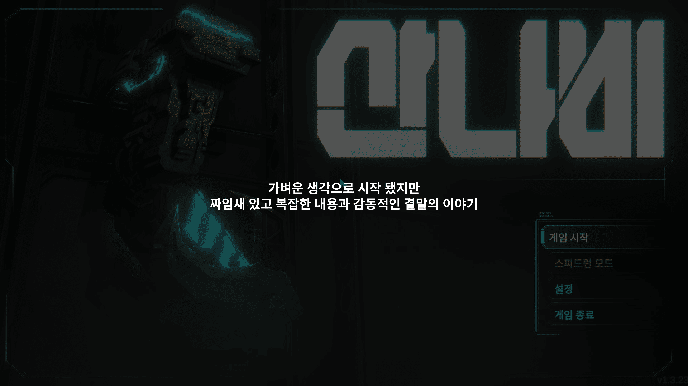

제가 한 게임 중 가장 인상깊은 게임을 소개합니다.
기계팔로 무장한 퇴역 군인은 초거대 재벌의 부패한 사유 도시를 오릅니다.
도시에 숨겨진 비밀을 밝혀내기 위해, 그리고 '산나비'를 찾아내 복수하기 위해.
사이버펑크 디스토피아를 배경으로 펼쳐지는 역동적이고
스타일리쉬한 2D "사슬 액션" 어드벤처 플랫포머 게임, 산나비입니다.
압도적인 연출, 훌륭한 도트프레임 활용
눈을 사로잡는 수려한 아트워크
세밀하고 시원한 사운드이펙트
탁월한 속도감과 쾌감을 선사하는 사슬액션